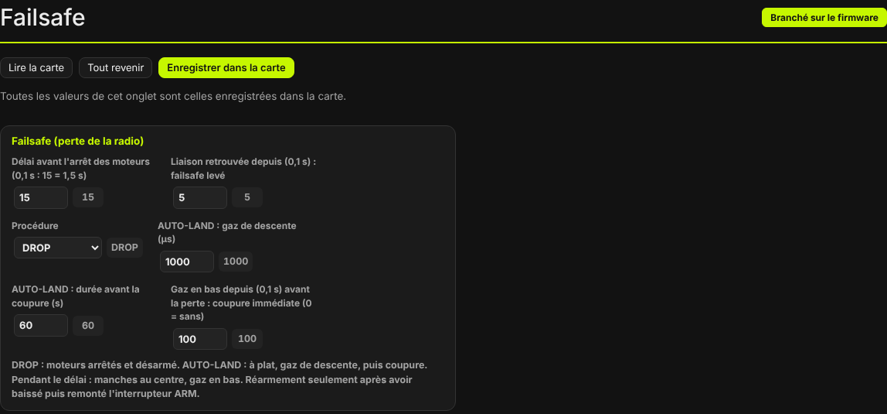
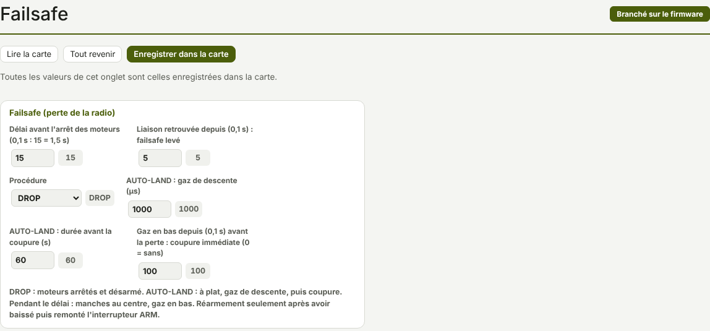

TRUEGLIDE
TRUEGLIDE Failsafe
Le failsafe dit ce que fait le drone armé quand la liaison radio se perd : attendre un court délai, puis couper les moteurs (DROP) ou descendre à plat (AUTO-LAND). Les moteurs ne repartent jamais seuls : réarmer demande de baisser puis relever l'interrupteur ARM.


Les réglages
| Réglage | Rôle | Défaut |
|---|---|---|
Délai avant l'arrêt des moteurs failsafe_delay | Temps de liaison perdue avant le failsafe, en 0,1 s. | 15 (1,5 s) |
Liaison retrouvée depuis failsafe_recovery_delay | Temps de liaison retrouvée avant de lever le failsafe, en 0,1 s. | 5 (0,5 s) |
Procédure failsafe_procedure | DROP ou AUTO-LAND. | DROP |
AUTO-LAND : gaz de descente failsafe_throttle | Gaz pendant la descente, en µs. | 1000 |
AUTO-LAND : durée avant la coupure failsafe_landing_time | Durée de la descente, en secondes. | 60 |
Gaz en bas depuis … : coupure immédiate failsafe_throttle_low_delay | Si les gaz étaient en bas depuis ce temps quand la liaison se perd : coupure sans attendre, en 0,1 s (0 = sans). | 100 (10 s) |
Mêmes noms et mêmes défauts que Betaflight. Lire la carte relit les valeurs, Tout revenir annule les changements, Enregistrer dans la carte les garde.
Ce qui se passe à la perte de la radio
La carte juge la liaison perdue après 0,2 s sans voies du récepteur. Ensuite :
- Pendant le délai (
failsafe_delay) : manches au centre, gaz en bas. Les interrupteurs (modes, ARM) gardent leur dernière position. - À la fin du délai, drone armé : le failsafe se déclenche. Les lunettes affichent FAILSAFE, le buzzer bipe tant que la radio est perdue.
- DROP : moteurs arrêtés, drone désarmé.
AUTO-LAND : le drone se met à plat, les gaz passent àfailsafe_throttlependantfailsafe_landing_time, puis les moteurs sont coupés. Les lunettes affichent ATTERRISSAGE.
Coupure immédiate gaz en bas
Si les gaz étaient en bas (sous min_check) depuis au moins failsafe_throttle_low_delay
(10 s par défaut) au moment de la perte, la carte juge le drone posé. Elle coupe tout de suite, sans attendre le
délai, et désarme, même avec la procédure AUTO-LAND.
Retour de la radio et réarmement
- La liaison revient. Après
failsafe_recovery_delay(0,5 s par défaut) de liaison continue, le failsafe est levé. - Le drone ne réarme pas seul. Les lunettes affichent la raison INTERRUPTEUR ARM A BAISSER.
- Baisser l'interrupteur ARM, puis le relever : le drone réarme si aucune autre raison ne l'empêche (gaz en bas, inclinaison…).
C'est voulu, comme sous Betaflight. Au premier vol, Johann a constaté que les moteurs repartent après ARM baissé puis relevé : c'est le réarmement normal.
Essayer le failsafe
Hélices retirées, drone armé sur le banc (voir l'armement sur banc) : éteindre la radio et vérifier que les moteurs s'arrêtent après le délai, puis qu'ils ne repartent pas quand la radio revient, tant que l'interrupteur ARM n'a pas été baissé puis relevé.